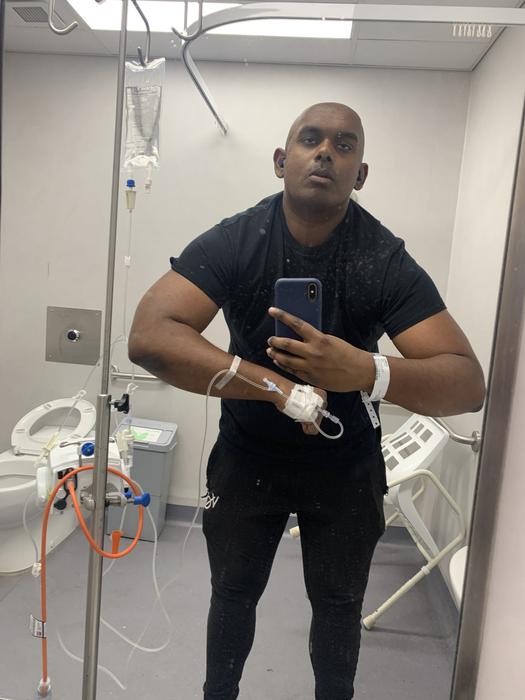
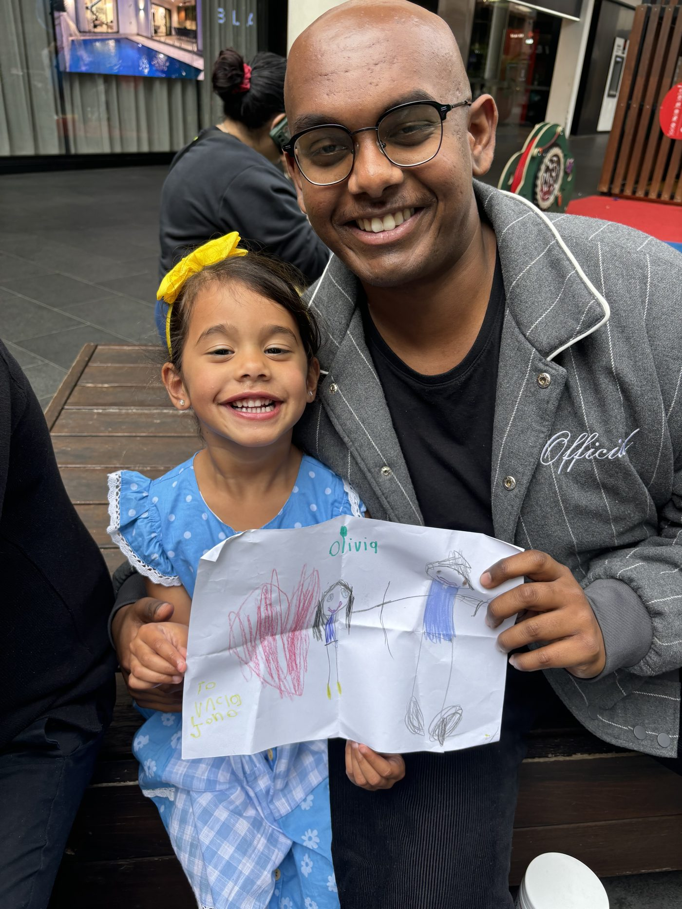
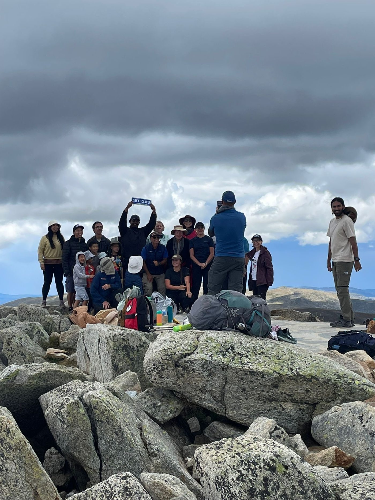
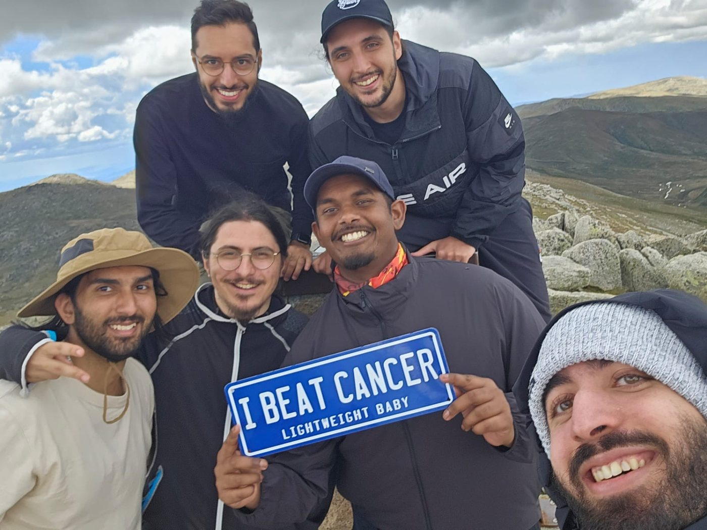
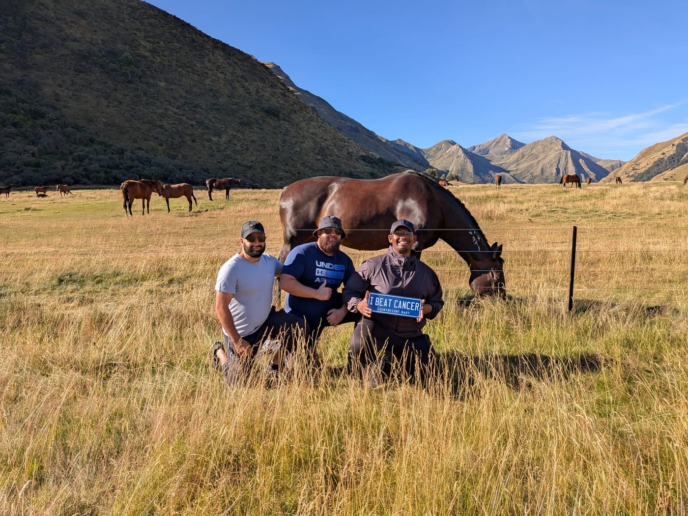
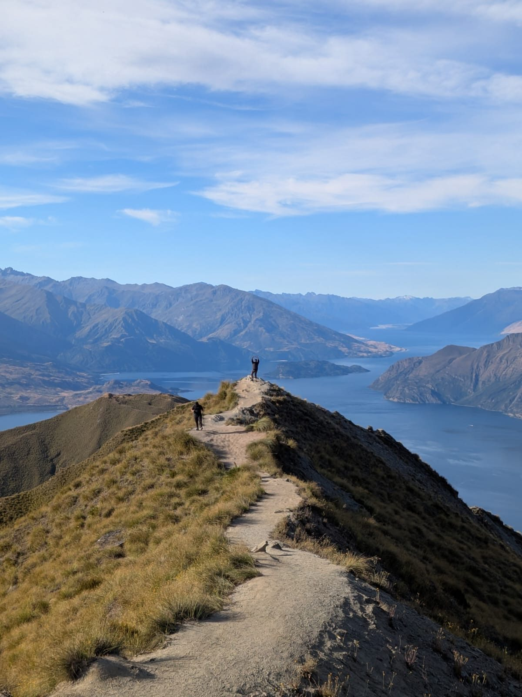
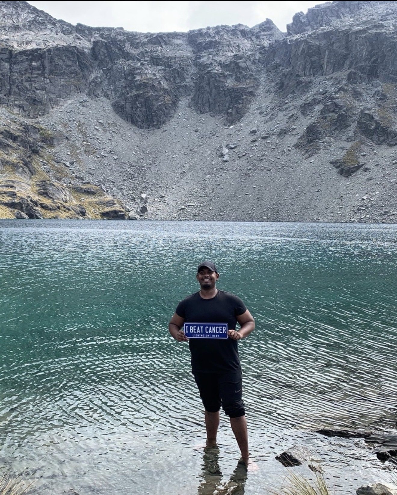

Eight small gems from sixteen months I never planned for.
In August 2024, at a point in my life where I was busiest — juggling my career, caring for my father, and a house move — I was diagnosed with cancer. What followed was around eight months of chemotherapy and radiotherapy, and then a slower, quieter chapter of gaining my element back over time. I'm very grateful to say I've recently found out that I've been in remission since December 2025.
Before any of that, I was a fairly simple man chasing one particular thing: I wanted to understand what it meant to be a strong person. I was a bit of a workaholic, driven from milestone to milestone, and deep down I hated the idea of pausing my life for anything. So when life paused it for me, I had a choice — resent the interruption, or treat it as a classroom. I decided that this chapter had lessons waiting for me, and my job was to extract the gems sitting in front of me.
Before I leave, I wanted to share those gems with you. Not the medical story — the human one. Take whatever is useful, and leave the rest.

I used to struggle to stay in my own lane. I knew comparison was a thief, but knowing it and living it are two different things. I'd scroll LinkedIn, see someone land a brilliant role, and quietly wish things would swing my way a little sooner. I used to see those people as the "gems" — the ones with everything going for them.
That perspective changed almost immediately once treatment began — in the cancer ward, of all places, somewhere I never expected to find teachers. The true gems, I learned, live in the grey areas — the people whose stories go unheard, the ones you'd never cross paths with unless life arranged it. I met people of every age in that ward, and each of them handed me a spark of wisdom; their memories slowly became memories of my own. The one who inspired me most was a nine-year-old girl named Susie, living with stage four cancer. I remember walking over intending to lift her spirits. She ended up lifting mine. Imagine that.
Walk through life with an open heart and learn from every corner of it — especially the corners you'd never think to look in. Otherwise you'll miss the opportunities standing right in front of you.
In my quieter hours I'd sit with difficult questions, and this was one of the hardest: whose life is actually harder? Picture two men. One lives in a first-world country; his main battle is climbing the corporate ladder, wrestling with problems of the luxurious kind. The other lives somewhere like Syria or Yemen; his sole mission each day is finding food for himself and his donkey. Take a moment with that before reading on.
The answer I eventually landed on is that there's no black-and-white answer — both carry real hardship. But the more interesting question is what happens after each of them overcomes their obstacle. Who do they credit for the victory? For me, as a person of faith, every win belongs to something far greater than myself. However you frame it, the principle holds: take a step back with each victory you receive — a great job, a kind word about your work — and hold it with gratitude and humility rather than ownership. It's the surest guard against arrogance I know.
This one might be a no-brainer for most people, but I genuinely struggled with it: I used to put a ceiling on what I'd hope for. I'd hold back on my biggest asks of life, worried I was overreaching. Once I finally sought advice and let that ceiling go, something shifted. The more openly I hoped, the more clearly I could see the next step forward — and the higher the potential I saw in myself.
Don't shrink your hopes to a "reasonable" size. Aim without limits, stay humble about the results, and be as generous in giving as you are bold in asking.
Like anyone, I'd have my lows — moments where I'd lose my spark completely. I built little systems to keep myself going, like regularly attending talks that fired me up. But the two things that genuinely moved the needle were these.
First: bravery. Never be shy of asking questions. I used to worry about sounding stupid in front of others, and it cost me. Ask anyway.
Second: if life ever feels like it's moving impossibly fast — like you're sleepwalking through the same day on repeat, and the past few years feel like one long copy-paste — the cure is to create new memories — to learn how to create new opportunities out of thin air, using the creativity each of us already carries. A new café. A new face. A new skill. A different sunset spot. Novelty is what slows time down.
There's a scary side to becoming desensitised — feeling less than you should in moments that deserve to be felt. I carried a particular misunderstanding for years: that feeling nothing was the same as being strong. It isn't. Our emotions are among the most important elements of who we are — both a gift and a challenge.
The better you understand what you feel and why, the more you can transmute it into wisdom for your next step — no matter the hardship in front of you.
This might be a hot take, but hear me out. I thrive most when I'm genuinely having fun — and, funnily enough, my time dealing with cancer was some of the most fun I'd had in years. At one point I met a psychologist through a youth cancer program, and she told me, more or less word for word: "I don't think you need anything from me — whatever you're doing seems to be working great for you." (For the record, it was my faith and my mum's example. My mother taught me this lesson better than anyone, mostly by laughing her way through everything. I miss her, and I hope her lessons reach the world one day.)
There is beauty in every situation, as long as finding beauty is genuinely your focus.

My favourite illustration comes from among the great scholars of Islamic history — figures like Hasan Al-Basri, Imam Al-Ghazali, and Ibn Taymiyyah. The last of these, a 14th-century scholar, spent much of his life imprisoned for refusing to abandon his convictions. Asked what his enemies could possibly do to him, his answer was essentially this:
"My paradise and my garden are in my heart wherever I go. If I am imprisoned, it is seclusion. If I am killed, it is martyrdom. If I am exiled, it is adventure."
Contentment built from within travels with you everywhere. And you get to pave that pathway with your own individual story — you are something special too.
Remember that chase I mentioned — wanting to understand what it means to be strong? Somewhere along the way it went stagnant. Every milestone I hit just looped me back to the same question: am I finally strong enough? It was a great catalyst for starting my journey, but a poor compass for continuing it.
I realised that no matter how much control you have over yourself (or think you have), strength alone still leaves you prone to losing your way. So I picked a better pursuit: becoming a lifelong seeker of knowledge and wisdom. I'll admit I can be a hypocrite and slack off at times — but the direction matters.
When you feel you've grasped everything a pursuit can teach you, don't keep circling it out of habit. Reassess, and choose a better "wrestling partner" for the next round.
This is my last gem, and possibly my favourite. When you go through real hardship, you can feel displaced within yourself — like losing a safety net you didn't realise you were standing on. We all draw our sense of security from something: wealth, friends, family, health, a career. Hardship has a way of showing you which of those are temporary, and what actually remains when they're stripped away. For me, that permanent foundation is my faith; for you it may be something else — but I'd encourage everyone to find out what theirs is before life asks the question for them.
What I felt is only a fraction of what many people around the world live with constantly. I'm grateful to have felt even that portion — and my heart goes out to everyone still at rock bottom.
Once I found out I'd beaten cancer, I made sure to celebrate properly with my loved ones. When they congratulated me, my honest answer was that I couldn't take the credit — I owe everything to something far greater than myself, and to the people who carried me through it.





As for what comes next, I’ve learned to simplify my intention: to be better at everything I do. To improve skill-wise and seek knowledge, become fitter and healthier, be a great listener to people in need, and to always stay open to reassessment.
To my colleagues: thank you. For the support, the laughs, and the banter over these years — it meant more than you know. If you're ever losing your spirit, please take the time to learn and understand yourself fully, keep your spark lit, and find joy along every step of the way.
— JonathanWith gratitude, always